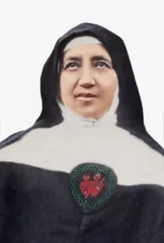
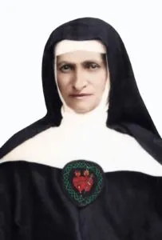
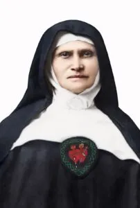

Cofundadoras
Mujeres de profunda fe, entrega y vocación de servicio que, junto al Venerable Padre Julio María Matovelle, contribuyeron al nacimiento y consolidación de la obra oblata.

Fue una de las principales colaboradoras en los inicios de la Congregación. Su vida estuvo marcada por la fe, la humildad, la fortaleza interior y el compromiso con la misión educativa.

Contribuyó activamente al crecimiento de la Congregación, destacándose por su espíritu de servicio, disciplina, amor a la vida consagrada y entrega a la formación cristiana.
Mujer de profunda vocación y compromiso espiritual. Su testimonio refleja caridad, entrega y dedicación a la formación integral de la persona.
Formó parte del grupo de mujeres que dieron origen a la Congregación, destacándose por su fe profunda, espíritu de servicio y amor por la misión educativa.

Integró el grupo fundador con una vocación firme y profundo amor por la misión educativa y evangelizadora, reflejando fe, servicio, amor y compromiso.
Ochoa Leon y Bolivar esquina | Pasaje, El Oro, Ecuador
+593 XXX XXX XXX
info@uepsantisimoscorazones.com
Unidad Educativa Particular
“Santísimos Corazones”
Todo por amor, ciencia y vida.
La Unidad Educativa Particular “Santísimos Corazones” forma estudiantes con excelencia académica, valores cristianos y compromiso con la sociedad, promoviendo el desarrollo integral de niños y jóvenes.
Nuestra comunidad educativa trabaja cada día para fortalecer el conocimiento, la fe y el servicio a los demás.
© 2026 UEP “Santísimos Corazones”. Derechos reservados. | Diseñado por sitrayas